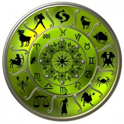

Ascendentul
 Ascendentul este semnul zodiac care se află la orizontul estic în momentul nasterii (momentul de referintă este primul tipat al nou-nascutului). Alfel spus, Ascendentul este zodia care rasare in momentul nasterii persoanei respective. Dacă cineva este născut în zori sau, mai exact spus, la răsăritul soarelui, atunci Ascendentul va fi în acelasi semn ca si semnul zodiacal al nativului. Din păcate, aceasta situatie este destul de rar întâlnita. În celelalte cazuri, Ascendentul personal se calculeaza in functie de numarul de ore trecute între rasaritul soarelui si momentul nasterii. Acesta este motivul pentru care ora nasterii este atât de importanta la calcularea unui horoscop personal. Ascendentul poate avea uneori o influentă covârsitoare asupra unui nativ: daca, la momentul nasterii, în semnul în care se afla Ascendentul se gasesc mai multe planete, este foarte posibil ca acel nativ sa aiba mai mult caracteristicile zodiei în care are Ascendentul decât cele ale zodiei natale.